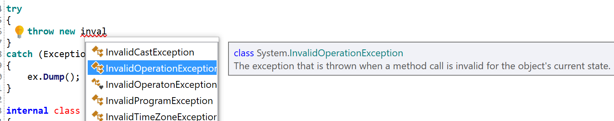
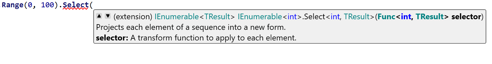
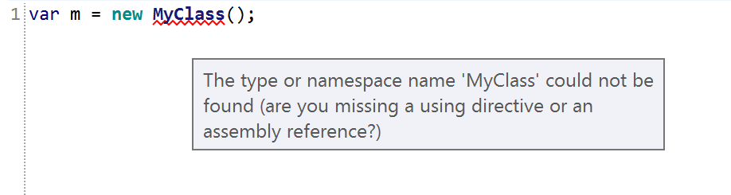
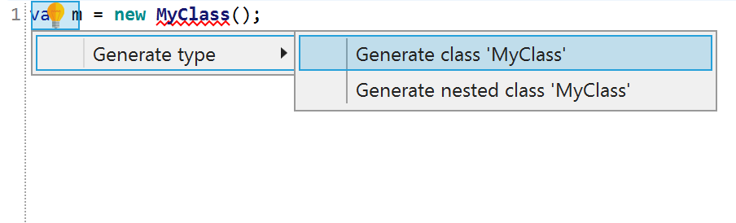

RoslynPad
Open source C# code editor and runner.
Built with Roslyn and
AvalonEdit.
Windows · macOS · Linux
Open source C# code editor and runner.
Built with Roslyn and
AvalonEdit.
Windows · macOS · Linux

Smart suggestions as you type, powered by Roslyn.

Method signatures and parameter info as you write.

Real-time error detection and warnings as you code.

Quick actions and refactorings to fix issues instantly.
Run C# scripts instantly with built-in REPL support.
Add NuGet packages with integrated search and install.